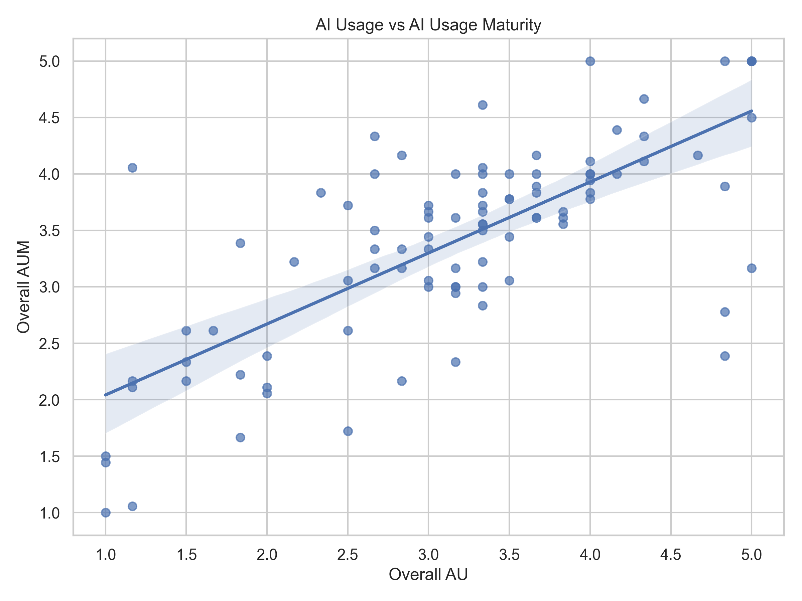
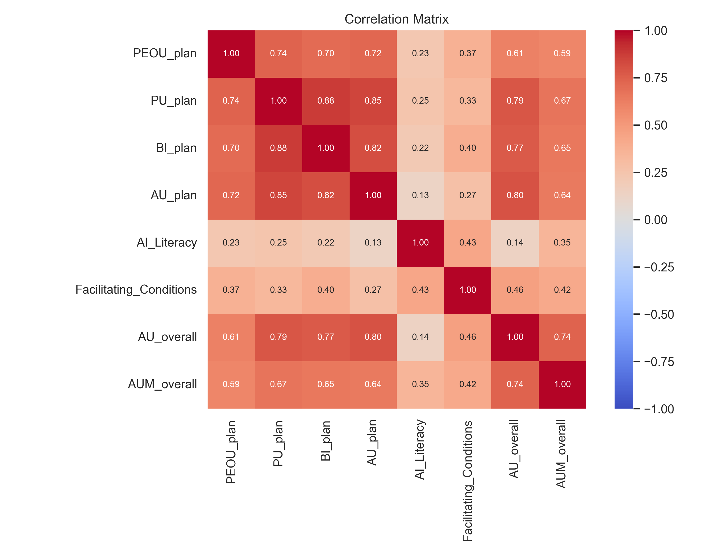

This dashboard summarizes results from the UCSC survey on generative AI usage across the software development lifecycle (SDLC). Values are synced from analysis_dataset_enriched.csv and Phase 3 outputs in this folder.
Students do not use AI uniformly across the SDLC. Usage and maturity track each other overall, but stage-level correlations show that how much students use AI at a stage and how mature that use is can diverge—especially where within-stage AU–AUM correlation is lower.
Open the generated PNGs in assets/ for publication-ready static figures (same pipeline as the charts below).
Source: stage_level_summary.csv
| Stage | AU Mean | AU SD | AUM Mean | AUM SD |
|---|---|---|---|---|
| Plan | 3.240 | 1.442 | 3.740 | 1.090 |
| Design | 3.438 | 1.272 | 3.757 | 1.019 |
| Implementation | 3.406 | 1.219 | 3.833 | 0.937 |
| Testing | 3.167 | 1.389 | 3.212 | 1.236 |
| Deployment | 2.969 | 1.318 | 2.896 | 1.223 |
| Maintenance | 2.969 | 1.285 | 3.108 | 1.241 |
stage_au_aum_correlations.csv.Same regression as Figure 4, exported from Python (assets/au_vs_aum.png).

assets/correlation_heatmap.png

Source: correlation_matrix.csv (planning-stage TAM and globals).
| Relationship | r | Notes |
|---|---|---|
| PEOU_plan ↔ PU_plan | 0.738 | Ease of use vs perceived usefulness. |
| PU_plan ↔ BI_plan | 0.881 | Usefulness vs behavioral intention. |
| PU_plan ↔ AU_plan | 0.846 | Usefulness vs actual use (planning). |
| BI_plan ↔ AU_plan | 0.816 | Intention vs actual use (planning). |
| AU_overall ↔ AUM_overall | 0.736 | Overall usage vs maturity. |
| AI_Literacy ↔ AU_overall | 0.135 | Literacy vs usage frequency. |
| AI_Literacy ↔ AUM_overall | 0.348 | Literacy vs maturity. |
Same numeric values as correlation_matrix.csv.
AU_overall, AUM_overall, AI_Literacy, Facilitating_Conditions (from descriptive statistics).
Bars: mean AU; whiskers drawn at ±1 SD per stage.
After updating CSVs, run: python3 generate_survey_dashboard.py